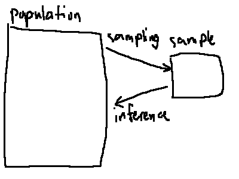
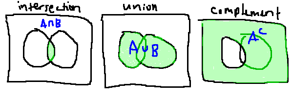

stat 411
ch1 basics
1.1 intro/overview
- statistics
- methods to collect/analyse/present/interpret data inductively
- science of data, decisionmaking, methodology
types of statistics:
-
descriptive –
methods to organise/display/decribe data
-
inferential –
methods to utitlse data to make decisions and models etc
the generalisation from sample to population is statistical inference
history
aristotle combined empricism and rationalism
see also cōgitō ergō sum
after the industrial revolution there was more of an economy, and governments
needed to find out different information about their populations
there are 3 lies in society: lies, damned lies, and statistics
– popularised by mark twain
book rec: how to lie with statistics
1.3 experiments and data
no two measurements are ever exactly the same
1.4 inferences
- population
-
all elements under study being characterized by some parameter:
eg population mean, \(\mu\)
- sample
-
a properly chosen subset of a population characterized by a statistic:
eg sample mean, \(\bar x\)
- sample space
- collection of all possible outcomes of an experiment
- random sample
-
a sample where every element of the population has the same likelihood to be
chosen (assuming the population is finite)
- simple random sample
- define the population
- pick a sample size \(n\)
- randomly select a sample eg using an rng

1.5 data
- element/object/subject
- an imate we collect data about
- variable
- a characteristic being studied
- observation/measurement
- numerical values of a variable for an element
places to get data from
census, survey, experiment, simulation, ...
but to get scientific data we need 2 statistical studies
- observational study
- conducted in a way where we have no control over any variables
-
cross-sectional –
collect data at one point in time
-
longitudinal/cohort –
collect data over a period of time about common factors
- experimental study
-
we have control over 1 variable. treatment group and control
group. eg clinical trials
-
principles (cf ch13-15 which we're not covering):
replication, randomization, blocking/blinding
1.6 types of variables
- quantitative variables
- discrete – countable
- continuous – any numerical value
- qualitative/categorical variables
- nominal – not rankable
- ordinal – rankable
levels of measurement
- nominal
- ordinal
-
interval –
no such thing as absolute zero. eg we can't say las vegas is twice as hot as
chicago if it's 60° in vegas and 30° in chicago
- ratio – there is a possible absolute zero
1.3 measures of central tendency
if we have a random sample \(x_1, x_2, \dots, x_n\) of size \(n\)
- measure of central tendency
- some indication of where the center of the dataset is
- mean
- simplest and nicest. "center of gravity"
- \(
\=x = \frac1n \sum\limits_{i = 1}^n x_i = \sum\limits_{i = 1}^n \frac{x_i}n
\)
- trimmed mean
-
mean with some of the potential outliers cut out, eg 5% trimmed mean means
taking only the middle 90% of the data
- median
- middle value in the ordered dataset
- if \(n\) is odd, \(\~x = x_{\frac{n + 1}2}\)
-
if \(n\) is even, \(\~x = \frac12\left(x_{\frac n2} + x_{\frac n2 + 1}\right)\)
- median is less sensitive to outliers so it is more robust
- mode
- values that occur most frequently
- one mode → unimodal, two modes → bimodal, etc
if the histogram of the data is symmetric, \(\text{mode} = \~x = \=x\)
if the histogram is skewed to (has a longer tail on) the right, \(
\text{mode} < \~x < \=x
\)
1.4 measures of variability
- range
- difference in the max and min of the dataset
- (individual) deviation
- \(x_i - \=x\)
- sample variance
- \(
s^2
= \frac1{n - 1} \sum\limits_{i = 1}^n (x_i - \=x)^2
= \frac1{n - 1} \left(
\sum\limits_{i = 1}^n x_i^2 - \frac{\left(\sum x_i\right)^2}n
\right)
\)
- standard deviation
- \(s = \sqrt{s^2}\)
the second form is nicer for computation since you don't need eg 2 loops
let mut sum_squares @ mut sum = 0;
let n = sample.len() as f64;
for x in sample {
sum += x;
sum_squares += x * x;
}
let s2 = 1./(n-1.) * (sum_squares - sum*sum/n);
let s = s2.sqrt();
the sum of deviations is \(\sum\limits_{i = 1}^n (x_i - \=x) = 0\)
- coefficient of variation
- for samples: \(\text{CV} = 100\% \cdot s/\=x\)
- for populations: \(\text{CV} = 100\% \cdot \sigma/\mu\)
- quartiles
- divide the sample into 4 equal parts (by #observations)
- \(Q_1\), med, \(Q_3\)
- interquartile range
- \(\text{IQR} = Q_3 - Q_1\)
- middle 50% of the sample
- five-number summary
- the three quartiles along with min and max
- used to make a boxplot
- inner fence
- the range between \(Q_1 - 1.5~\text{IQR}\) and \(Q_3 + 1.5~\text{IQR}\)
- outside this are mild outliers
- percentiles
- like quartiles but with 100 equal parts
- \(Q_1 = p_{25}\) etc
-
\(p_k = \frac{nk}{100}\)th observation and says that \(k\)% of the observations
are at or below that value
- percentile rank
- figure out what percentile an observation is
- \(100 \cdot (\text{\# observations} < x_i) / n\)
1.10 empirical rule & z-score
- empirical rule
-
for a normal (bell shaped) distribution,
- \(\=x \pm s\) contains 68% of values
- \(\=x \pm 2s\) → 95%
- \(\=x \pm 3s\) → 99.7%
so almost the entire dataset fits in 6 standard deviations.
this is only a rule of thumb. also called the 6σ rule
- z-score
- \(z_i = \frac{x_i - \=x}s\)
- unit-free!
- if \(|z| > 2\) for an observation it could be considered an outlier
- converting \(x_i\) to \(z_i\) is called standardization
- and \(x_i = \=x + z_is\) for destandardization
ch2 probability
2.1 intro
- statistical experiment
- process of generating outcomes that cannot be predicted in advance
- sample space
- set of all possible outcomes. denoted \(S\) or \(\Omega\)
- event
- any subset of \(S\), denoted with a capital letter
eg rolling a die: \(S = \set{1, 2, 3, 4, 5, 6}\)
- probability
- numerical measure of how likely some event is, denoted \(P(\cdot)\)
kolmogorov's axioms of probability:
- \(0 \le P(A) \le 1\) for any event \(A\)
- \(P(S) = 1\)
assuming all outcomes in \(S\) are equally likely,
\(P(A) = \frac{\#A}{\#S}\)
- venn diagram
- depiction of the relationship btwn sample space and events
- tree diagram
- (pp37-38)
2.2 set operations
- empty set
- \(\emptyset\), the set with nothing in it. \(P(\emptyset) = 0\)
- intersection
- \(A \cap B = \set{x : x \in A \land x \in B}\)
- mutually exclusivei / disjoint
- if \(A \cap B = \emptyset\)
- union
- \(A \cup B = \set{x : x \in A \lor x \in B}\)
- complement
- \(A^\complement = A' = \=A = \set{x : x \not\in A}\)

- rule of addition
- \(P(A \cup B) = P(A) + P(B) - P(A \cap B)\)
- rule of complement
- \(P(A^\complement) = 1 - P(A)\)
- demorgan's laws
- \((A \cup B)^\complement = A^\complement \cap B^\complement\)
- \((A \cap B)^\complement = A^\complement \cup B^\complement\)
- distributive laws
- \(A \cap (B \cup C) = (A \cap B) \cup (A \cap C)\)
- \(A \cup (B \cap C) = (A \cup B) \cap (A \cup C)\)
- odds in favor of A
- \(\frac{P(A)}{P(A^\complement)}\)
- result between 0 and \(\infty\) exclusive
2.4 counting sample points
- combinatorics
- study of enumeration
- multiplication principle
-
for \(k\) choices, if there are \(n_i\) ways to make choice \(i\), then the
total number of possibilities is \(\prod\limits_{i = 1}^k n_i\)
- permutation
- an ordered subset
- factorial
- for any integer \(n \ge 0\), \(n! = \prod\limits_{i = 1}^n i\)
- specialcase \(0! = 1\)
the number of permutations of \(r\) objects among a set of \(n\) is \(P_{n, r} = \frac{n!}{(n - r)!}\)
- combination
- an unordered subset
the number of ways to choose \(r\) of \(n\) objects, regardless of order, is \[
C_{n, r} = {n \choose r} = \frac{P_{n, r}}{r!} = \frac{n!}{r! (n - r)!}
\]
\(n \choose r\) is also called the binomial coefficient and is equal to
\({n \choose n - r}\)

- multinomial combination
-
if there are \(k\) kinds, then the ways to choose partition the set into kinds
is \[{n \choose n_1, n_2, \dots, n_k} = \frac{n!}{\prod_{i = 1}^k n_i!}\]
eg there are \({n \choose 4, 4, 2, 1} = 34650\) ways to rearrange the letters in
"mississippi"